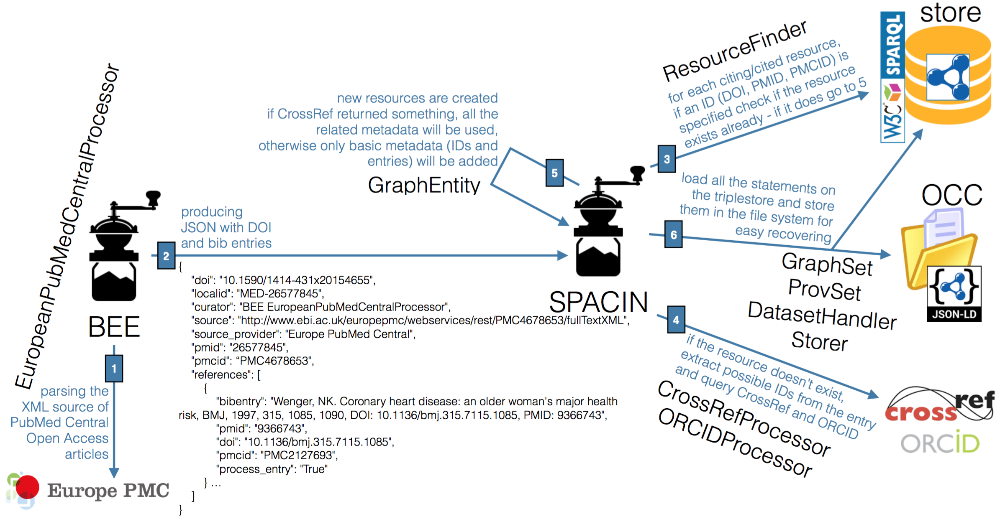

In this poster paper we provide an overview of the OpenCitations project and of its main outcome, the OpenCitations Corpus, which is an open repository of scholarly citation data made available under a Creative Commons public domain dedication, which provides in RDF accurate citation information harvested from the scholarly literature.
RASH version: http://bit.ly/29qsRwe
Reference lists from academic articles are the core elements of scholarly communication, since they permit the attribution of credit and integrate our independent research endeavours – and the cruel reality is that they are not freely available at all. For instance, UK research universities each pay tens of thousands of pounds annually for having granted the access to Scopus and Web of Science. In the current age where Open Access is considered a necessary practice in research, as also endorsed by institutions such as the European Union in its Horizon 2020 programme, citation data now needs to be recognized as a part of the Commons – those works that are freely and legally available for sharing – and placed in an open repository, where they should be stored in appropriate machine-readable formats so as to be easily reused by machines to assist people in producing novel services
.
These are the main premises for the OpenCitations project (OC) and for the establishment of its Corpus (OCC), i.e. an open repository of scholarly citation data harvested from the scholarly literature. Along with other complementary initiatives recently proposed within our community – e.g. the Semantic Lancet Project , OpenAIRE and Scholarly Data – the current instantiation of the OCC has started to process reference lists of scholarly papers available in Europe PubMed Central since the beginning of July. In this paper we provide a brief overview of the OC main components that make possible the extraction and description of such reference lists into RDF.
OpenCitations (http://opencitations.net) is a project which aims at creating an open dataset of citation data, accompanied by specifications and other browsing tools – SPARQL endpoint, browsing interfaces, etc. – for supporting data consumers. Its main output is the creation of the Open Citations Corpus (OCC), an open repository of scholarly citation data made available under a Creative Commons public domain dedication (CC0), which provides accurate bibliographic references harvested from the scholarly literature (described using the SPAR Ontologies according to the OCC metadata document ) that others may freely build upon, enhance and reuse for any purpose, without restriction under copyright or database law.
The OCC stores metadata relevant to these citations in RDF, encoded as JSON-LD, and makes them available through a SPARQL endpoint (and, in the near future, as downloadable datasets). It includes six different kinds of bibliographic entities:
bibliographic resources (br) – resources that cites/are cited by another bibliographic resource (e.g. journal article), or that contains citing/cited resources (e.g. journals);
resource embodiments (re) – physical or digital formats in which bibliographic resources were made available by its publisher;
bibliographic entries (be) – textual bibliographic entries occurring in the reference list within a bibliographic resource, that reference other bibliographic resources;
responsible agents (ra) – agents having a certain role with respect to a bibliographic resource (e.g. authors, editors, publishers);
agent roles (ar) – roles held by an agent with respect to a bibliographic resource;
identifiers (id) – an external identifier (e.g. DOI , ORCID , PubMedID ) associated with the bibliographic entity.
The corpus URL (https://w3id.org/oc/corpus/) identifies the main aggregated dataset of the OCC. It is split in several sub-datasets, one for each of the aforementioned kind of entities included in the corpus, having a URL composed by the corpus URL plus the two-letter short name for the class of items (e.g. be
for a bibliographic entry) followed by an oblique slash (e.g. https://w3id.org/oc/corpus/be/). Each dataset is described appropriately by means of the Data Catalog Vocabulary and the VoID Vocabulary, and a SPARQL endpoint has been also made available with all the entities included in the OCC.
A URL is assigned to each entity of each sub-dataset upon initial curation into the OCC, and all of them can be accessed in different formats (i.e., HTML, RDF/XML, Turtle, and JSON-LD) via URL dereferencing. Each entity URL is composed by the sub-dataset URL plus a number assigned to each resource, unique among resources of the same type, which increments for each new entry in that resource class. For instance, the resource https://w3id.org/oc/corpus/be/537 is the 537th bibliographic entry created in the OCC. Each of these entities have also associated metadata describing their provenance by means of PROV-O and its PROV-DC extension (e.g. https://w3id.org/oc/corpus/be/537/prov/se/1). In particular, we keep track of the curatorial activities related to each OCC entity, as well as the agents involved in such activities and their role. Additional information about all the data handled and the way they are represented in RDF are detailed in the official OCC Metadata Document .
The creation of the data included in the OCC is handled by two Python scripts called Bibliographic Entries Extractor (BEE) and the SPAR Citation Indexer (SPACIN), available in the GitHub repository of the project. As shown in , BEE is responsible for the creation of JSON files containing information about the articles in the OA subset of PubMed Central (retrieved by using the Europe PubMed Central API). Each of these JSON files also includes the complete reference list of the paper in consideration. Then, SPACIN processes each JSON file, retrieves metadata information about all the citing/cited articles described in it by querying the Crossref API and the ORCID API, and stores all the generated RDF resources in the file system in JSON-LD format and on the OCC triplestore. It is worth noticing that the triplestore includes all the data about the curated entities except the provenance data and the description of the datasets, that are accessible only via HTTP.
The workflow introduced in is a process that runs until no more JSON file can be produced by BEE. Thus, the current instance of the OCC is actually evolving dynamically in time, and can be easily extended so as to interact with additional REST API so as to gather article metadata and their related references from different sources.
Each new resource introduced in the OCC by SPACIN occupies between 0.3 and 4 kb, plus additional 32 kb dedicated to store its provenance data. Every day the aforementioned workflow adds to the corpus about 2 millions triples, which include more than 20000 new citing/cited bibliographic resources and about 100000 new authors – 5% of those is usually disambiguated through ORCID ids.

In this poster paper we have introduced OpenCitations, which is a projects that aims at creating an open repository of scholarly citation data, which provides accurate bibliographic references harvested from the scholarly literature: the OpenCitations Corpus (OCC). The new instance of the OCC has just been set up, and it is already populated with millions of triples – a number that is going to grow quickly in the next months considering the continuous workflow developed that adds new data dynamically starting from authoritative source.
We are currently working on three different aspects. First of all, we are developing tools for linking the resources in the OCC with those ones included in other datasets, e.g. Scholarly Data. In addition, we are experimenting on the use multiple and parallel instantiations of SPACIN so as to increase the amount of new daily information processed. Finally, we are studying some mechanisms for allowing authors of papers to add their reference lists to the corpus directly, so as to include fresh and new information related to papers that may not be published on the usual channels (e.g. publishers) yet.
Bagnacani, A., Ciancarini, P., Di Iorio, A., Nuzzolese, A. G., Peroni, S., Vitali, F. (2014). The Semantic Lancet Project: A Linked Open Dataset for Scholarly Publishing. In EKAW 2014 Satellite Events: 101–105. http://dx.doi.org/10.1007/978-3-319-17966-7_10
Alexiou, G., Vahdati, S., Lange, C., Papastefanatos G., Lohmann, S. (2016). OpenAIRE LOD services: Scholarly Communication Data as Linked Data. To appear in Proceedings of SAVE-SD 2016. http://cs.unibo.it/save-sd/2016/papers/html/alexiou-savesd2016.html
Peroni, S., Shotton, D. (2016). Metadata for the OpenCitations Corpus. figshare. https://dx.doi.org/10.6084/m9.figshare.3443876
Peroni, S., Dutton, A., Gray, T., Shotton, D. (2015). Setting our bibliographic references free: towards open citation data. Journal of Documentation, 71 (2): 253–277. http://dx.doi.org/10.1108/JD-12-2013-0166
Peroni, S. (2014). The Semantic Publishing and Referencing Ontologies. In Semantic Web Technologies and Legal Scholarly Publishing: 121–193. http://dx.doi.org/10.1007/978-3-319-04777-5_5
Nuzzolese, A. G., Gentile, A. L., Presutti, V., Gangemi, A. (2016). Conference Linked Data – Our Web Dog Food has gone gourmet. To appear in Proceedings of ISWC 2016.